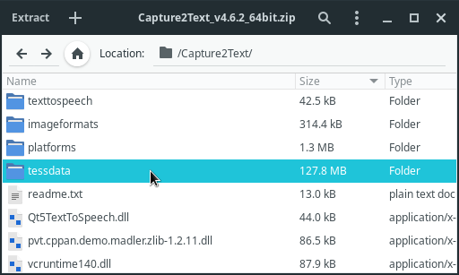

Mining from manga
When we read manga, sometimes there's a need to quickly OCR a portion of the screen to look up new words and add sentences to Anki. To do so, you're going to use an optical character recognition program and a few helper tools.
Preface
Our goal is to be able to look up words in manga. We need a toolchain that does the following:
- Takes a screenshot, selecting the part of the screen that contains a speech bubble with Japanese text.
- Processes the taken screenshot.
- Returns the recognized text.
- Sends the text to a dictionary program. For example, GoldenDict or Yomichan Search.
- We can look up words and make Anki flashcards.
To recognize text on the pages of a manga, you can use Tesseract or Transformers. Tesseract is a more lightweight tool but makes more mistakes on average. With Transformers, you have to install a big number of Python packages that take up several gibibytes of disk space, but you get much better text recognition.
In this article I explain how to set up both. The resulting user workflow is identical, see the demo below.
Video demonstration.
Obtain manga
See Resources for places where you can get manga. For the best image quality, I recommend downloading manga from Torrent sites. However, if you don't want to wait for the download, you can also read manga online on various websites. No matter which option you choose, it's easy to find a great selection of manga to read.
Image viewer
To read manga,
it is nice to have an image viewer.
I use nsxiv,
but for this setup you can install any image viewer.
On many manga sites you can also read online in a web browser.
To open an entire image folder in nsxiv, you can run nsxiv . in the folder.
File manager
Another quick topic to cover up front is your file manager.
Very often when you download manga, you get an archive
which needs to be unpacked (*.zip, *.rar, etc.).
For convenience, set up a keyboard shortcut to be able to extract archives in a simple keystroke.
For example, my file manager is lf.
To extract archives by pressing E,
put map E aunpack $fx in the config file at ~/.config/lf/lfrc
(atool needs to be installed as well).
lf supports tags.
When you finish a reading session,
tag the last page (image file) you've read by pressing t
so that you don't lose the position you're at.
Next time you open the same folder,
you will see a red asterisk next to the tagged file.
To have lf automatically select the image currently displayed in nsxiv,
add the following code to ~/.config/nsxiv/exec/image-info.
The snippet is taken from my dotfiles.
# If running as a child of lf, select the current file.
if [ -n "$id" ]; then
lf -remote "send $id select \"$1\""
fi
It is possible to set up a keyboard shortcut in nsxiv
that tells lf to add a tag to the currently displayed image.
For example,
to tag the current file by pressing t,
add the following code to ~/.config/nsxiv/exec/key-handler.
The snippet is taken from my dotfiles.
while read file; do
case "$1" in
# ...
# other keys you may have set
# ...
"t")
# Tag the current file using lf. E.g, the last read manga page.
if [ -n "$id" ]; then
lf -remote "send $id select \"$file\""
lf -remote "send $id tag x"
fi
;;
esac
done
OCR method
Although Transformers requires more system resources, I prefer it to Tesseract. Compared to Tesseract it handles manga better.
Setting up Transformers
Install transformers_ocr from the AUR.
$ trizen -S transformers_ocr
transformers_ocr makes use of the following programs:
If you're not running a distribution based on Arch Linux, install manually by following the instructions on GitHub.
By itself transformers_ocr is just a short wrapper script
that installs Transformers and other required Python packages.
After the installation you need to download additional dependencies.
Run the following command.
$ transformers_ocr download
It will download manga-ocr,
a Python library responsible for optical character recognition.
The files will be saved to ~/.local/share/manga_ocr
and take up 2 GiB of disk space.
Note: transformers_ocr saves the Python packages to a standalone directory
to ensure that later you can uninstall everything by simply removing the directory.
Usage
To OCR text on a manga page, run:
$ transformers_ocr recognize
When run, it will ask you to select an area with Japanese text and try to OCR it. The resulting text will be saved to the system clipboard. Use it in combination with Yomichan Search to quickly lookup Japanese words in real-time.
The first run will take longer than usual.
There's yet another set of files that have to be downloaded for the OCR to work.
The files will be saved to ~/.cache/huggingface and take up another 500 MiB.
To send the recognized text directly to GoldenDict
without copying it to the system clipboard,
append
clip_command=goldendict %TEXT% to the config file.
The config file is read from ~/.config/transformers_ocr/config.
Keyboard shortcut
Bind this script to a keyboard shortcut in your DE, WM, sxhkd, xbindkeysrc, etc. Here's an example for i3wm:
bindsym $mod+o exec --no-startup-id transformers_ocr recognize
Autostart
Before transformers_ocr can recognize text,
it needs to start a background listener.
Although this is optional,
to minimize the startup lag,
add the following command to autostart.
transformers_ocr listen
Here's an example for i3wm:
exec --no-startup-id transformers_ocr listen
Setting up Tesseract
Install the following dependencies:
$ sudo pacman -S --needed tesseract maim xclip imagemagick unzip
- tesseract is the OCR engine. It is considered fairly accurate, and many people like it.
- maim is a utility for taking screenshots which can take parts of the screen.
- xclip is a tool for copying text to the clipboard.
- imagemagick is a command-line image editor. It's going to come handy to edit the screenshots before Tesseract analyzes them.
- unzip is a tool for extracting zip archives.
Download
maimocr
and save it as ~/.local/bin/maimocr.
maimocr is a script we are going to use to recognize Japanese text.
Make the file executable:
$ chmod +x ~/.local/bin/maimocr
The directory ~/.local/bin should be in your
PATH.
Usage
Tesseract doesn't work without
trained data files.
These files tell Tesseract how to read and recognize text from images.
When you first run maimocr, it should download Japanese data files automatically.
Check the terminal output to see if the process succeeds.
When you run it the second time,
maimocr will ask you to select an area with Japanese text and try to OCR it.
The resulting text will be saved to the system clipboard.
Use it in combination with Yomichan Search
to quickly lookup Japanese words in real-time.
Keyboard shortcut
Bind this script to a keyboard shortcut in your DE, WM, sxhkd, xbindkeysrc, etc. Here's an example for i3wm:
bindsym $mod+o exec --no-startup-id maimocr
Now you can quickly call maimocr anywhere by pressing the keyboard shortcut.
Expanding data set
By default, maimocr automatically downloads
tessdata.zip
(mirror)
with Tesseract data files,
then saves the files to ~/.local/share/tessdata.
To use additional data files with maimocr,
copy any new *.traineddata files to ~/.local/share/tessdata.
Capture2Text files
These instructions are no longer necessary. The files are included by default.
Download capture2text.
We won't need the program itself because it's garbage
but the trained data files are going to be useful.
Extract the contents of the tessdata folder to ~/.local/share/tessdata:
$ unzip -j Capture2Text_v*_64bit.zip 'Capture2Text/tessdata/*' -d ~/.local/share/tessdata
Alternatively, download just the Capture2Text Japanese files from here.

Contents of the ZIP archive.
Troubleshooting
If you notice that the script fails to OCR certain images, try to zoom in or find a scan with a better resolution. Tesseract works poorly at low resolutions.
Nonstandard fonts often fail to OCR properly.
In this case I don't have a definitive answer at the moment.
Try searching for more *.traineddata files online
and adding them to the tessdata folder.
Adding screenshots
If you want to add a screenshot from a manga to your Anki card,
maim
can do that too.
maimpick
is a script that uses maim to screenshot parts of the screen and copy them to the clipboard.
Install it to ~/.local/bin, make it executable and bind it to a key.
Explore my dotfiles for details.
In addition to maim, maimpick requires
dmenu
and
xdotool
to work.
Note: ames is another program that can add screenshots to Anki.
Other software
See Resources.
Tags: guide